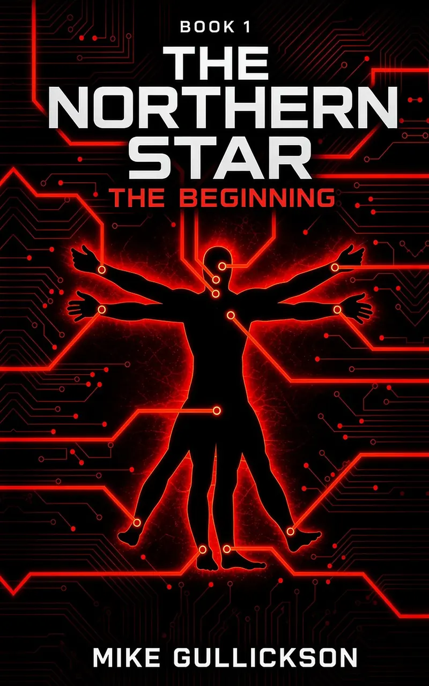

Book One
The Beginning
The oil is gone. Civilization lives inside a network. One soldier is about to give up his body to defend it.
In 2058, Mindlink lets humanity live and work in cyberspace, and the corporation that built it holds civilization by the mind. John Raimey agrees to become the first Tank Major, a bionic soldier sent after a hacker who can kill without leaving the network.
For fans of Daniel Suarez’s Daemon and Richard K. Morgan’s Altered Carbon.
Available on Amazon: The Northern Star: The Beginning (opens in a new tab)